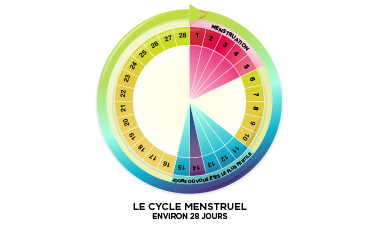

Comprendre le cycle menstruel
À chaque cycle menstruel, le corps se prépare pour une éventuelle grossesse. Les cycles commencent au début de la puberté et surviennent environ une fois par mois.
Comment ça fonctionne ?
Les menstruations sont le résultat de la préparation de la couche interne de l'utérus (l'endomètre). Celle-ci s'épaissit pour accueillir un futur embryon.
Si la grossesse n'a pas lieu, cette couche s'évacue par le vagin : c'est ce qui provoque les saignements.

Le cycle menstruel est un processus naturel et cyclique.
Les chiffres clés :
-
📅 Durée des saignements :
Normalement entre 3 et 8 jours. -
🔄 Fréquence du cycle :
Généralement tous les 21 à 35 jours.
Note : Il est tout à fait normal que le cycle soit irrégulier durant les premières années de la puberté.
Bon à savoir
- Les règles reviennent chaque mois, c'est un signe de santé.
- Il existe plusieurs types de protections (serviettes, tampons, coupes) pour rester à l'aise.
- N'hésite pas à poser tes questions à une infirmière ou un parent de confiance.